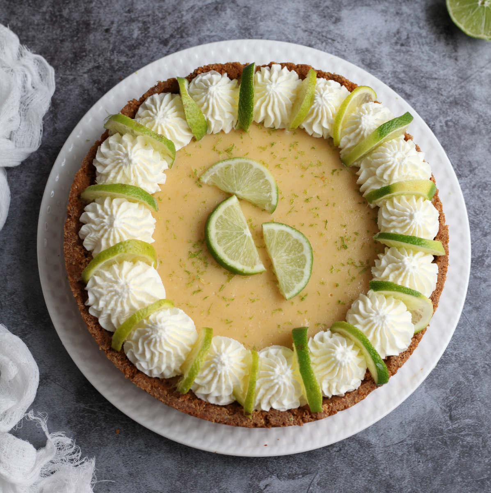

Key Lime Pie

Made with ordinary limes, this “Key lime” pie tastes every bit as authentic as the
real deal — plus it's easier to make.
You'll need 8 to 10 limes total for this recipe. Choose plump limes that give a little when you squeeze them; they will be easier to juice.
You should get about 2 tablespoons of juice from each lime. Be sure to zest the limes before you squeeze the juice from them,
as it's near impossible to do afterward.
With no eggs, it may be hard to believe that this pie will set,
but have faith — it will.
Ingredients
- 1½ cups finely crushed graham cracker crumbs, from about 12 whole graham crackers
- ⅓ cup packed light brown sugar
- 4 tablespoons unsalted butter, melted
- Two 14-oz cans sweetened condensed milk
- 1 cup plain Greek yogurt (2% or whole milk)
- 1 tablespoon grated lime zest
- ¾ cup fresh lime juice
- 1 cup cold heavy cream
- 2 tablespoons confectioners' sugar
- 1 teaspoon grated lime zest
- 8 to 10 thin lime slices
Steps
- Preheat oven to 375 °F and set an oven rack in the middle position.
- In a medium bowl, combine the graham cracker crumbs, brown sugar, and melted butter; stir with a fork first, and then your hands until the mixture is well combined. Using your fingers and the bottom of a glass or dry measuring cup, press the crumbs firmly into the bottom and up the sides of a 9 x 1.5-inch (deep-dish) pie pan. The crust should be about ¼-inch thick. (Tip: do the sides first.)
- Bake for 10 minutes, until just slightly browned. Let the crust cool on a wire rack.
- Lower the oven temperature to 350°F.
- In a large bowl, whisk together the sweetened condensed milk, yogurt, lime zest, and lime juice. Pour the thick mixture into the warm graham cracker crust. Bake for 15 minutes, until the filling is almost set; it should wobble a bit. Let cool at room temperature for 30 minutes, then place in the refrigerator to chill thoroughly, about 3 hours.
- In the bowl of an electric mixer, beat the heavy cream until soft peaks form. Add the confectioners' sugar and beat until medium peaks form. Top the pie with the whipped cream. Decorate with the lime zest and lime slices. Store the pie in the refrigerator until ready to serve. Slice the pie into wedges, wiping your knife clean between slices, and serve cold.
- Make-Ahead Instructions: You can make the crust a day ahead of time, but the filling should be added on the day of serving, otherwise the crust will get soggy.